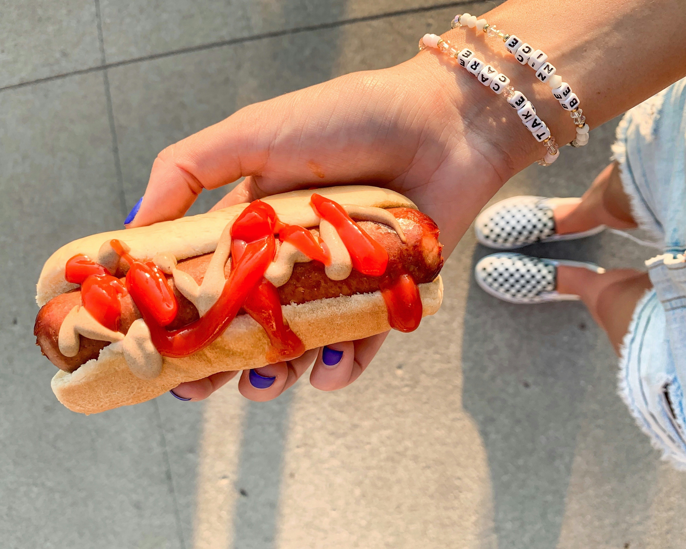

Hot Dogs

Description
hot dogs are a classic summertime food and commonly eaten at sports stadiums. When The Black Parade toured across America in the Summer of 2025 hot dogs were proclaimed a delicacy by The Grand Dictator. Gerard Way shared hot dogs with the crowd in Los Angeles.
Ingredients
- hot dog buns
- hot dogs
- toppings
- ketchup
- mustard
- mayo
- sauerkraut
- relish
- chili
- cheese
Steps
- Heat a cooking pan over medium-high heat
- Grill the hot dogs until they are browned and warmed, about five minutes
- Remove hot dogs onto place, place hot dog buns on pan to warm, insides faced down on the pan
- Once buns are warm, add hot dogs onto buns
- Add toppings as desired
- Enjoy!